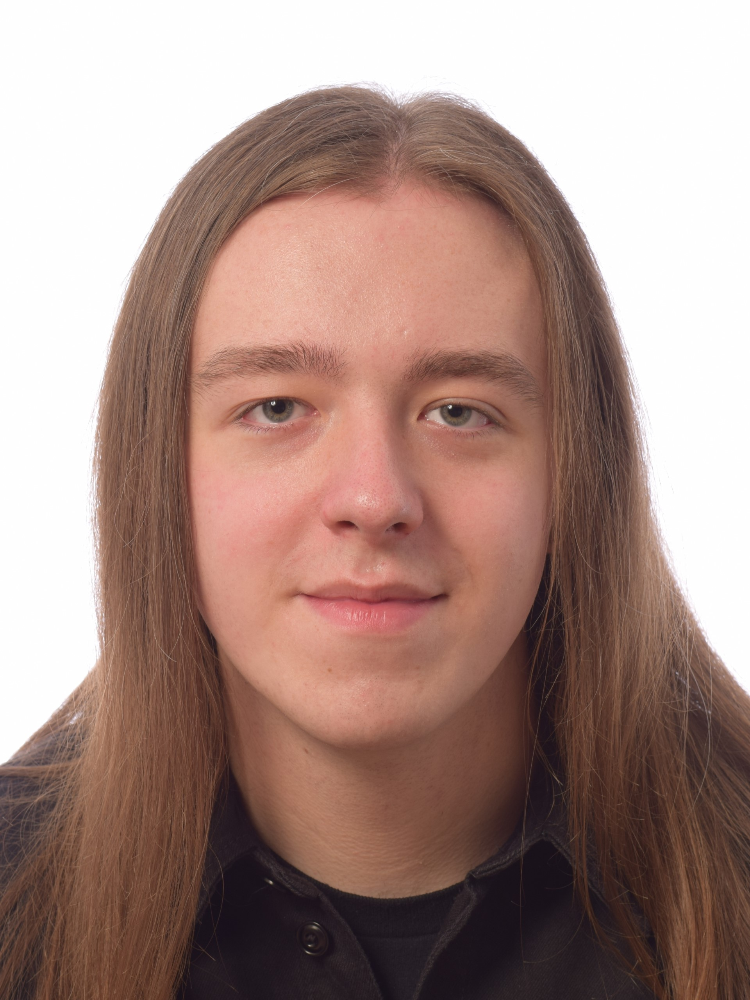

Wie ben ik?
Ik ben Ward Gijsels, ik volg de studie Programmeren graduaat in Thomas More Turnhout. Ik heb voor deze studie gekozen vanwegen mijn intresse in website development, IT en computers in het algemeen. In het verleden ben ik afgestudeerd van de middelbare school: GO! Talentenschool Turnhout Campus Boomgaard in de richting 7de jaar gericht op hoger onderwijs (Naamloos leerjaar) (BSO).
Opleiding
Hiervoor behaalde ik een getuigschrift in de richting Kantoor in het Heilig-Graf Instituut Turnhout campus Patersstraat. Ik heb hierna het 7de jaar naamloos gedaan zodat ik verder kon studeren.
In de Kantoor richting ben ik voor het eerst in contact gekomen met het creëren van websites. Dit was destijds nog wel met een website creatoor tool(Wix) maar sinds dien ben ik geïntreseerd geraakt in het creëren van websites.